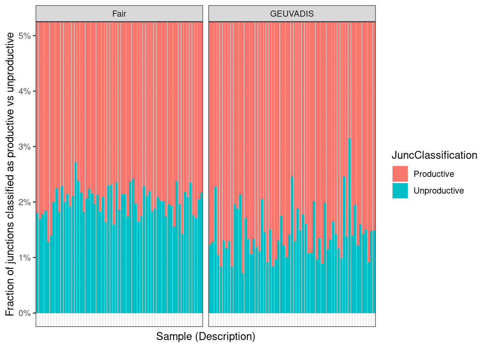

library(tidyverse)
library(edgeR)20250709_title
Introduction
I have done the basic RNA seq processing, and now I want to make contrasts and QC check samples, by experiment, using PCA
Analysis
load count matrix
counts <- read_tsv("../code/rna_seq/featureCounts/GRCh38_GencodeRelease44Comprehensive/AllSamplesUnstrandedCounting.Counts.txt", comment="#") %>%
dplyr::rename_at(vars(-c(1:6)), ~ str_replace(., "rna_seq/Alignments/(.+?)/Aligned.sortedByCoord.out.bam", "\\1"))
dim(counts)[1] 62754 221I want to do gene filtering, and library size normalization by experiment:cell_type combination, so I will wrap that work in a function.
samples <- read_tsv("../code/config/samples.tsv") %>%
filter(Aligner == "STAR") %>%
distinct(sample, .keep_all = TRUE)
filter_and_normalize <- function(counts, samples) {
# normalize by library size
counts.unfiltered <- DGEList(counts = counts[, samples$sample], genes = counts[, 1:6])
mean.cpm.unfiltered <- counts.unfiltered %>%
calcNormFactors() %>%
cpm(log=T, prior.count=0.1) %>%
apply(1, mean)
cpm <- counts.unfiltered[mean.cpm.unfiltered > 1, ] %>% # filter out lowly expressed
calcNormFactors() %>%
cpm(log=T, prior.count=0.1)
return(cpm)
}
cpm.test <- filter_and_normalize(counts, samples %>% filter(StudyFirstAuthor == "Colombo"))
cpm.test %>% dim()[1] 12427 12# PCA plot
pca <- cpm.test %>%
t() %>%
scale() %>%
prcomp()
summary(pca)Importance of components:
PC1 PC2 PC3 PC4 PC5 PC6
Standard deviation 77.2411 59.8863 32.16918 23.77717 19.6286 16.35301
Proportion of Variance 0.4801 0.2886 0.08327 0.04549 0.0310 0.02152
Cumulative Proportion 0.4801 0.7687 0.85197 0.89746 0.9285 0.94999
PC7 PC8 PC9 PC10 PC11 PC12
Standard deviation 14.22100 12.30804 11.38057 9.42616 7.03044 5.251e-14
Proportion of Variance 0.01627 0.01219 0.01042 0.00715 0.00398 0.000e+00
Cumulative Proportion 0.96626 0.97845 0.98887 0.99602 1.00000 1.000e+00pca$x %>% as.data.frame() %>%
rownames_to_column("sample") %>%
left_join(samples, by = "sample") %>%
ggplot(aes(x = PC1, y = PC2, color = Description)) +
geom_point() +
labs(
title = "PCA of Colombo NMD KD RNA-seq samples",
x = paste0("PC1 (", round(100 * summary(pca)$importance[2, 1], 1), "%)"),
y = paste0("PC2 (", round(100 * summary(pca)$importance[2, 2], 1), "%)")
) +
theme_bw() +
theme(legend.position = "bottom")Great let’s wrap the cpm and PCA plotting in a single function, and then we can use it for all experiments.
Plot_PCA <- function(counts, samples, study_first_author) {
cpm <- filter_and_normalize(counts, samples %>% filter(StudyFirstAuthor %in% study_first_author))
pca <- cpm %>%
t() %>%
scale() %>%
prcomp()
P.dat <- pca$x %>% as.data.frame() %>%
rownames_to_column("sample") %>%
left_join(samples, by = "sample")
P <- P.dat %>%
ggplot(aes(x = PC1, y = PC2, color = Description)) +
geom_point(size=3) +
labs(
title = paste("PCA of", paste(study_first_author, collapse="+"), "RNA-seq samples"),
x = paste0("PC1 (", round(100 * summary(pca)$importance[2, 1], 1), "%)"),
y = paste0("PC2 (", round(100 * summary(pca)$importance[2, 2], 1), "%)")
) +
theme_bw() +
theme(legend.position = "bottom")
return(list(cpm = cpm, pca = pca, P=P, P.dat=P.dat))
}
samples %>% distinct(StudyFirstAuthor)# A tibble: 9 × 1
StudyFirstAuthor
<chr>
1 Colombo
2 Darman
3 Fair
4 GEUVADIS
5 UnpublishedFractionation
6 Floor
7 Ritter
8 Sterne-Weiler
9 UnpublishedPolysomeProfilingDarman.pca <- Plot_PCA(counts, samples, "Darman")
Darman.pca$PFairGeuvadis.pca <- Plot_PCA(counts, samples, c("Fair", "GEUVADIS"))
FairGeuvadis.pca$PUnpublishedFraction.pca <- Plot_PCA(counts, samples, c("UnpublishedFractionation"))
UnpublishedFraction.pca$P.dat %>%
mutate(CytOrNuc = ifelse(str_detect(Description, "[cC]yt"), "Cytoplasmic", "Nuclear")) %>%
ggplot(aes(x = PC1, y = PC2, color = CytOrNuc)) +
geom_point(aes(shape=cell_type)) +
labs(
title = paste("PCA of", "Dylan's", "RNA-seq samples"),
x = paste0("PC1 (", round(100 * summary(UnpublishedFraction.pca$pca)$importance[2, 1], 1), "%)"),
y = paste0("PC2 (", round(100 * summary(UnpublishedFraction.pca$pca)$importance[2, 2], 1), "%)")
) +
theme_bw() +
theme(legend.position = "bottom")Floor.pca <- Plot_PCA(counts, samples, c("Floor"))
Floor.pca$P.dat %>%
separate(Description, into=c("PolysomeRegion", "Replicate"), sep="_") %>%
mutate(NumPolysomes = recode(PolysomeRegion,
"80S" = "1",
"poly2" = "2",
"poly3" = "3",
"poly4" = "4",
"poly5" = "5",
"poly6" = "6",
"poly7" = "7",
"poly8" = "8",
"cyto" = "C")) %>%
ggplot(aes(x = PC1, y = PC2, fill = PolysomeRegion)) +
geom_point(aes(shape=Replicate), size=5, shape=21, color='black') +
geom_text(aes(label=NumPolysomes), size=3, color='black') +
scale_fill_brewer(palette = "Blues") +
labs(
title = paste("PCA of", "Floor's", "RNA-seq samples"),
x = paste0("PC1 (", round(100 * summary(Floor.pca$pca)$importance[2, 1], 1), "%)"),
y = paste0("PC2 (", round(100 * summary(Floor.pca$pca)$importance[2, 2], 1), "%)")
) +
theme_bw() +
theme(legend.position = "bottom")Ritter.pca <- Plot_PCA(counts, samples, c("Ritter"))
Ritter.pca$P.dat %>%
ggplot(aes(x = PC1, y = PC2, color = Description)) +
geom_point(aes(shape=cell_type), size=3) +
labs(
title = paste("PCA of", "Ritter's", "RNA-seq samples"),
x = paste0("PC1 (", round(100 * summary(Ritter.pca$pca)$importance[2, 1], 1), "%)"),
y = paste0("PC2 (", round(100 * summary(Ritter.pca$pca)$importance[2, 2], 1), "%)")
) +
theme_bw() +
theme(legend.position = "bottom", legend.box = "horizontal") +
guides(color = guide_legend(nrow = 2), shape = guide_legend(nrow = 2))Plot_PCA(counts, samples, "Sterne-Weiler")$PUnpublishedPolysomeProfiling.pca <- Plot_PCA(counts, samples, "UnpublishedPolysomeProfiling")
UnpublishedPolysomeProfiling.pca$P.dat %>%
separate(Description, into=c("Replicate", "PolysomeRegion"), sep="_") %>%
ggplot(aes(x = PC1, y = PC2, color = PolysomeRegion)) +
geom_point(aes(shape=Replicate), size=3) +
labs(
title = paste("PCA of", "Sara's", "RNA-seq samples"),
x = paste0("PC1 (", round(100 * summary(UnpublishedFraction.pca$pca)$importance[2, 1], 1), "%)"),
y = paste0("PC2 (", round(100 * summary(UnpublishedFraction.pca$pca)$importance[2, 2], 1), "%)")
) +
theme_bw() +
theme(legend.position = "bottom")Great, by PCA, all the expected samples cluster together, with the NMD enrichment treatmnt (eg fraction, or NMD knockdown/inhibtion, or polysome profiling region) being a major driver of the variation.
Will also be good to do some QC on total library size (genic counts), as well as leafcutter splice junction counts (which should be correlated with genic counts but read length varies across experiments), as well as fraction of leafcutter junction counts that are classified as productive vs unproductive.
Intron.annotations <- read_tsv("../code/rna_seq/SplicingAnalysis/ClassifyJuncs/GRCh38_GencodeRelease44Comprehensive/Leaf2_junction_classifications.txt")
leafcutter.table.counts <- read_tsv("../code/rna_seq/SplicingAnalysis/leafcutter/GRCh38_GencodeRelease44Comprehensive/juncTableBeds/JuncCounts.sorted.bed.gz") %>%
mutate(Intron_coord = str_glue("{`#Chrom`}:{start}-{end}")) %>%
inner_join(
Intron.annotations
) %>%
dplyr::select(1:6, Gene_name, Intron_coord, Annot, Coding, UTR, everything())
leafcutter.table.counts %>%
dplyr::select(-c(1:3), -c(5:11)) %>%
distinct(junc, .keep_all=T) %>%
column_to_rownames("junc") %>%
colSums() %>%
as.data.frame() %>%
rownames_to_column("sample") %>%
dplyr::rename(LeafcutterJunctionCounts = ".") %>%
inner_join(samples, by = "sample") %>%
mutate(label = str_glue("{sample} ({Description})")) %>%
arrange(label) %>%
ggplot(aes(y = LeafcutterJunctionCounts, x = label)) +
geom_col() +
facet_grid(~StudyFirstAuthor, space="free", scales="free_x", drop=TRUE) +
theme(axis.text.x = element_text(angle = 45, hjust = 1)) +
theme_bw()All samples have decent depth.
Now let’s check fraction of junctions that are classified as productive vs unproductive.
UP.sum <- leafcutter.table.counts %>%
filter(!Coding) %>%
dplyr::select(-c(1:3), -c(5:11)) %>%
distinct(junc, .keep_all=T) %>%
column_to_rownames("junc") %>%
colSums() %>%
as.data.frame() %>%
rownames_to_column("sample") %>%
dplyr::rename(sum = ".") %>%
mutate(JuncClassification = "Unproductive")
PR.sum <- leafcutter.table.counts %>%
filter(Coding) %>%
dplyr::select(-c(1:3), -c(5:11)) %>%
distinct(junc, .keep_all=T) %>%
column_to_rownames("junc") %>%
colSums() %>%
as.data.frame() %>%
rownames_to_column("sample") %>%
dplyr::rename(sum = ".") %>%
mutate(JuncClassification = "Productive")
UP.PR.sum.counts <- bind_rows(UP.sum, PR.sum) %>%
inner_join(samples, by = "sample") %>%
mutate(label = str_glue("{sample} ({Description})")) %>%
arrange(label)
UP.PR.sum.counts %>% ggplot(aes(y = sum, x = label, fill = JuncClassification)) +
geom_col(position = "fill") +
facet_grid(~StudyFirstAuthor, space="free", scales="free_x", drop=TRUE) +
theme(axis.text.x = element_text(angle = 45, hjust = 1)) +
labs(title = "Leafcutter junction counts by productive vs unproductive classification") +
theme_bw()Ok better to look one by one by study…
UP.PR.sum.counts %>%
filter(StudyFirstAuthor == "Darman") %>%
ggplot(aes(y = sum, x = label, fill = JuncClassification)) +
geom_col(position = "fill") +
scale_y_continuous(labels = scales::percent_format(accuracy = 1)) +
labs(title = "Darman NMD inhibition RNA-seq samples") +
theme_bw() +
coord_cartesian(ylim=c(0,0.05)) +
theme(axis.text.x = element_text(angle = 45, hjust = 1)) +
labs(x = "Sample (Description)", y = "Fraction of junctions classified as productive vs unproductive")UP.PR.sum.counts %>%
filter(StudyFirstAuthor == "Colombo") %>%
ggplot(aes(y = sum, x = label, fill = JuncClassification)) +
geom_col(position = "fill") +
scale_y_continuous(labels = scales::percent_format(accuracy = 1)) +
labs(title = "Darman NMD inhibition RNA-seq samples") +
theme_bw() +
coord_cartesian(ylim=c(0,0.05)) +
theme(axis.text.x = element_text(angle = 45, hjust = 1)) +
labs(x = "Sample (Description)", y = "Fraction of junctions classified as productive vs unproductive")UP.PR.sum.counts %>%
filter(sample %in% FairGeuvadis.pca$P.dat$sample) %>%
ggplot(aes(y = sum, x = label, fill = JuncClassification)) +
geom_col(position = "fill") +
scale_y_continuous(labels = scales::percent_format(accuracy = 1)) +
theme_bw() +
coord_cartesian(ylim=c(0,0.05)) +
theme(axis.text.x = element_blank(), axis.ticks.x = element_blank()) +
labs(x = "Sample (Description)", y = "Fraction of junctions classified as productive vs unproductive") +
facet_wrap(~StudyFirstAuthor, scales="free_x", nrow=1)
UP.PR.sum.counts %>%
filter(sample %in% UnpublishedFraction.pca$P.dat$sample) %>%
mutate(Group = if_else(str_detect(Description, "[cC]yt"), "Control", "NMD_enriched")) %>%
ggplot(aes(y = sum, x = label, fill = JuncClassification)) +
geom_col(position = "fill") +
scale_y_continuous(labels = scales::percent_format(accuracy = 1)) +
theme_bw() +
coord_cartesian(ylim=c(0,0.04)) +
theme(axis.text.x = element_blank(), axis.ticks.x = element_blank()) +
labs(x = "Sample (Description)", y = "Fraction of junctions classified as productive vs unproductive") +
facet_grid(cell_type~Group, scales="free_x", space="free_x", drop=TRUE)UP.PR.sum.counts %>%
filter(sample %in% Floor.pca$P.dat$sample) %>%
separate(Description, into=c("PolysomeRegion", "Replicate"), sep="_") %>%
mutate(NumPolysomes = recode(PolysomeRegion,
"80S" = "1",
"poly2" = "2",
"poly3" = "3",
"poly4" = "4",
"poly5" = "5",
"poly6" = "6",
"poly7" = "7",
"poly8" = "8",
"cyto" = "C")) %>%
ggplot(aes(y = sum, x = label, fill = JuncClassification)) +
geom_col(position = "fill") +
scale_y_continuous(labels = scales::percent_format(accuracy = 1)) +
labs(title = "Floor polysome profiling RNA-seq samples") +
theme_bw() +
coord_cartesian(ylim=c(0,0.02)) +
theme(axis.text.x = element_text(angle = 45, hjust = 1))UP.PR.sum.counts %>%
filter(sample %in% Ritter.pca$P.dat$sample) %>%
mutate(cell_type = ifelse(str_detect(cell_type, "ESC"), "ESC", "NPC")) %>%
ggplot(aes(y = sum, x = label, fill = JuncClassification)) +
geom_col(position = "fill") +
scale_y_continuous(labels = scales::percent_format(accuracy = 1)) +
labs(title = "Ritter polysome profiling RNA-seq samples") +
theme_bw() +
coord_cartesian(ylim=c(0,0.02)) +
theme(axis.text.x = element_text(angle = 45, hjust = 1)) +
facet_grid(cell_type~., scales="free_x", space="free_x", drop=TRUE)
UP.PR.sum.counts %>%
filter(sample %in% UnpublishedPolysomeProfiling.pca$P.dat$sample) %>%
separate(Description, into=c("Replicate", "PolysomeRegion"), sep="_") %>%
ggplot(aes(y = sum, x = label, fill = JuncClassification)) +
geom_col(position = "fill") +
scale_y_continuous(labels = scales::percent_format(accuracy = 1)) +
labs(title = "Sara polysome profiling RNA-seq samples") +
theme_bw() +
coord_cartesian(ylim=c(0,0.02)) +
theme(axis.text.x = element_text(angle = 45, hjust = 1))Ok, so it’s not always clear that monosomes are really enriched in the NMD… though I think light polysomes are compare to heavy… That is, monosomes are generally somewhere in the middle, compared to light and heavy polysomes with regards to enrichment for NMD targets.
Based on these, I will decide exactly what contrasts to make.
Darman is simple: DMSO vs cyclohexamide:
Darman.pca$P.dat %>%
mutate(Group = recode(Description,
"DMSO" = "Control",
"Cyclohexamide" = "NMD_enriched")) %>%
dplyr::select(sample, Group) %>%
arrange(Group) %>%
write_tsv("../code/config/contrast_groupfiles/Darman_Cycloxhexamide_vs_DMSO.txt", col_names = F)Fair and GEUVADIS are also simple… steady state vs naRNA
FairGeuvadis.pca$P.dat %>%
mutate(Group = recode(Description,
"SteadyStateRNAseq" = "Control",
"naRNAseq" = "NMD_enriched")) %>%
dplyr::select(sample, Group) %>%
arrange(Group) %>%
write_tsv("../code/config/contrast_groupfiles/FairAndGEUVADIS_naRNA_vs_SteadyState.txt", col_names = F)Colombo next… scramble vs UPF1 KD and scramble vs SMG6/SMG7 KD
Colombo.pca.df <- Plot_PCA(counts, samples, c("Colombo"))$P.dat %>%
mutate(Group = case_when(
str_detect(Description, "scramble") ~ "Control",
str_detect(Description, "UPF1") ~ "NMD_enriched",
str_detect(Description, "SMG6, SMG7") ~ "NMD_enriched"
))
Colombo.pca.df %>%
filter(str_detect(Description, "scramble|UPF1")) %>%
dplyr::select(sample, Group) %>%
arrange(Group) %>%
group_walk(~ write_tsv(.x,
paste0("../code/config/contrast_groupfiles/Colombo.", .y, "UPF1_vs_Scramble.txt"),
col_names = FALSE
))
Colombo.pca.df %>%
filter(str_detect(Description, "scramble|SMG6")) %>%
dplyr::select(sample, Group) %>%
arrange(Group) %>%
group_walk(~ write_tsv(.x,
paste0("../code/config/contrast_groupfiles/Colombo.", .y, "SM67_and_SMG7_vs_Scramble.txt"),
col_names = FALSE
))Dylan’s unpublished fractionation is a bit more complex… I’ll make a contrast for each cell type:
UnpublishedFraction.pca$P.dat %>%
mutate(Group = if_else(str_detect(Description, "[cC]yt"), "Control", "NMD_enriched")) %>%
group_by(cell_type) %>%
arrange(Group) %>%
dplyr::select(sample, Group) %>%
group_walk(~ write_tsv(.x,
paste0("../code/config/contrast_groupfiles/DylanUnpublishedFractionation.", .y, "Nuclear_vs_Cytoplasmic.txt"),
col_names = FALSE
))Floor’s polysome profiling is also a bit more complex. I will make a single contrast for light (1-2) vs heavy (5-8) polysomes.
Floor.pca$P.dat %>%
separate(Description, into=c("PolysomeRegion", "Replicate"), sep="_") %>%
mutate(Group = recode(PolysomeRegion,
"80S" = "NMD_enriched",
"poly2" = "NMD_enriched",
"poly3" = "NMD_enriched",
"poly5" = "Control",
"poly6" = "Control",
"poly7" = "Control",
"poly8" = "Control",
)) %>%
filter(Group %in% c("Control", "NMD_enriched")) %>%
dplyr::select(sample, Group) %>%
arrange(Group) %>%
write_tsv("../code/config/contrast_groupfiles/Floor_LightPolysome_vs_HeavyPolysome.txt", col_names = F)Ritter’s samples have two cell types, and from PCA it looks like light polysomes (2-4) and monosomes are quite separated from heavy polysomes and cytosol. So I will make a contrast for each cell type, comparing light polysomes and monosomes to heavy polysomes and cytosol.
Ritter.pca$P.dat %>%
mutate(Group = case_when(
str_detect(Description, "light") ~ "NMD_enriched",
str_detect(Description, "monosome") ~ "NMD_enriched",
str_detect(Description, "heavy") ~ "Control",
str_detect(Description, "cytosol") ~ "Control"
)) %>%
mutate(cell_type = ifelse(str_detect(cell_type, "ESC"), "ESC", "NPC")) %>%
filter(Group %in% c("Control", "NMD_enriched")) %>%
group_by(cell_type) %>%
arrange(Group) %>%
dplyr::select(sample, Group) %>%
group_walk(~ write_tsv(.x,
paste0("../code/config/contrast_groupfiles/Ritter.", .y, "LightPolysome_vs_HeavyPolysome.txt"),
col_names = FALSE
))Ok and for Sara’s polysome profiling, it’s again not totally clear.. From PCA, monosomes and light polysomes are quite close, so I will group those together and contrast to the heavy polysomes (only using the FalconTube high yield samples in place of their technical replicate equivalent with less RNA input)… but I am also curious about the free RNA fraction, so I will make a contrast for that too, comparing to the heavy polysomes…
UnpublishedPolysomeProfiling.pca$P.dat$Description [1] "S3_Free" "S3_HeavyPolysome"
[3] "S3_HeavyPolysomeFalconTubeHighYield" "S3_LightPolysome"
[5] "S3_Monosome" "S3_MonosomeFalconTubeHighYield"
[7] "S4_Free" "S4_HeavyPolysome"
[9] "S4_LightPolysome" "S4_Monosome" UnpublishedPolysomeProfiling.pca$P.dat %>%
mutate(Group = recode(Description,
"S3_LightPolysome" = "NMD_enriched",
"S4_LightPolysome" = "NMD_enriched",
"S3_HeavyPolysomeFalconTubeHighYield" = "Control",
"S4_HeavyPolysome" = "Control",
)) %>%
filter(Group %in% c("Control", "NMD_enriched")) %>%
dplyr::select(sample, Group) %>%
arrange(Group) %>%
write_tsv("../code/config/contrast_groupfiles/SaraUnpublishedPolysomeProfiling_LightPolysome_vs_HeavyPolysome.txt", col_names = F)
UnpublishedPolysomeProfiling.pca$P.dat %>%
mutate(Group = recode(Description,
"S3_Free" = "NMD_enriched",
"S4_Free" = "NMD_enriched",
"S3_HeavyPolysomeFalconTubeHighYield" = "Control",
"S4_HeavyPolysome" = "Control",
)) %>%
filter(Group %in% c("Control", "NMD_enriched")) %>%
dplyr::select(sample, Group) %>%
arrange(Group) %>%
write_tsv("../code/config/contrast_groupfiles/SaraUnpublishedPolysomeProfiling_FreeRNA_vs_HeavyPolysome.txt", col_names = F)